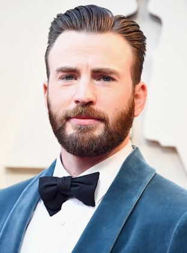
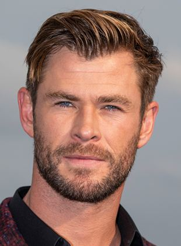
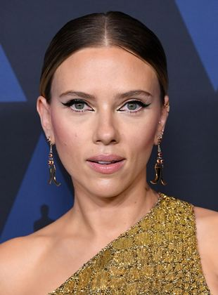
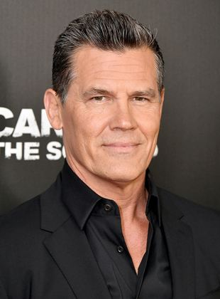
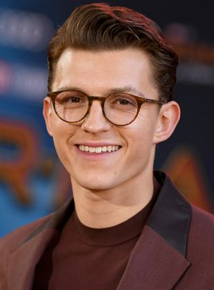

- Atividades: Ator, Produtor, Diretor
- Nome de nascimento: Christopher Robert Evans
- Nacionalidade: Americano
- Nascimento: 13 de junho de 1981 (Sudbury, Massachussetts, EUA)
- Idade: 40 anos
- Atividades: Ator, Produtor Executivo, Coprodutor
- Nome de nascimento: Mark Alan Ruffalo
- Nacionalidade: Americano
- Nascimento: 22 de novembro de 1967 (Kenosha, Wisconsin, EUA)
- Idade: 54 anos
- Atividades Ator, Produtor de set, Produtor Executivo
- Nacionalidade Australiano
- Nascimento 11 de agosto de 1983 (Melbourne, Austrália)
- Idade 38 anos
- Atividades Atriz, Produtora Executiva, Diretora
- Nome de nascimento Scarlett Ingrid Johansson
- Nacionalidade Americana
- Nascimento 22 de novembro de 1984 (Nova York, Nova York, EUA)
- Idade 37 anos
- Atividades Ator, Produtor Executivo
- Nome de nascimento Josh James Brolin
- Nacionalidade Americano
- Nascimento 12 de fevereiro de 1968 (Los Angeles, Califórnia, EUA)
- Idade 54 anos
- Atividades Ator, Produtor de set, Produtor Executivo
- Nome de nascimento Thomas Stanley Holland
- Nacionalidade Britânico
- Nascimento 1 de junho de 1996 (Londres, Reino Unido)
- Idade 26 anos
- voltar ao topo Voltar a sinopse do filme
Filmografia
Do céu ao inferno e ao céu novamente. Se alguém pensou no mito do pássaro fênix que renasce das cinzas, até que a comparação poderia se encaixar para definir este brilhante ator que já deu vida para personagens tão distantes em tempo e estilo, como Charles Chaplin (Chaplin - 1992) e Tony Stark (Homem de Ferro - 2008).Na ativa por mais de quatro décadas e dono de uma voz grave, afinada, Downey já dublou desenho animado (God, the Devil and Bob - 2000), se aventurou no mundo da música, em 2004, com o disco The Futurist (Sony) e fez bonito na televisão, onde faturou o Globo de Ouro, além de outros prêmios e indicações por Larry Paul, personagem do seriado Ally McBeal (2000 - 2002). Mas é no cinema que sua estrela parece brilhar mais intensamente.
Chris Evans

Biografia
Filmografia
Depois de uma infância e estudos em Boston, Chris Evans decidiu ir para Nova York para tentar a sorte na comédia. Ele rapidamente consegue entrar na profissão, principalmente participando em séries de televisão (Boston Public). Sua carreira no cinema começou em 2001, em uma comédia para adolescentes (Não é Mais um Besteirol Americano). Mas sem ficar preso a apenas um gênero de filme, o ator vai para outras produções: trapaceia nas provas com Scarlett Johansson na comédia policial Nota Máxima (2004), interpreta o papel de Kim Basinger no thriller Celular - Um Grito de Socorro (2004) e seduz Jessica Biel em London (2005).O destino de Chris Evans como o conhecemos hoje começou em 2005, quando ele conseguiu seu primeiro papel como super-herói.
Mark Ruffalo

Biografia
Filmografia
Apesar de ter um pequeno papel em Ride With The Devil (1999), a primeira participação de destaque de Mark Ruffalo no cinema vem com o premiado drama Conte Comigo (2000). Ele conquista papéis importantes no thriller erótico Em Carne Viva (2003) e no drama Brilho Eterno de uma Mente Sem Lembranças (2004), antes de se lançar em comédias românticas como De Repente 30 (2004) e Dizem Por Aí... (2005). Ele retoma os dramas e suspenses com Zodíaco (2007) e Ensaio Sobre a Cegueira (2008). Em 2010, Martin Scorsese convida-o a atuar em Ilha do Medo, ao lado de Leonardo DiCaprio. Ele recebe sua primeira indicação ao Oscar como ator coadjuvante no drama Minhas Mães e Meu Pai (2010). Um grande passo para o reconhecimento popular vem com o papel de Hulk no grande sucesso Os Vingadores - The Avengers (2012), abrindo a porta para novas produções no papel do monstro gigantesco.
Chris Hemsworth

Biografia
Filmografia
Dono de uma voz grave, Chris é o irmão do meio dos atores Luke Hemsworth (seriado Neighbours) e Liam Hemsworth (Presságio). Tendo estudado na American Dialect at Screenwise Film & TV School for Actors, em Sydney, na Austrália, o começo de sua carreira foi basicamente na televisão, onde estreou como Rei Arthur no seriado Guinevere Jones (2002). Nessa mesma época, surgiram mais oportunidades em outros seriados, como Neighbours (2002) e The Saddle Club (2003), mas foi em 2004 que veio a grande chance com um papel fixo na novela Home and Away, onde ficou até 2007 no papel de Kim Hyde, pelo qual foi premiado e recebeu indicações. A popularidade foi tanta que ele durante a temporada de 2006 da versão australiana do programa Dancing with the Stars, ele se segurou até o quinto de um total de sete programas. Em Hollywood, seu primeiro filme foi a ficção científica Star Trek.
Scarlet Johansson

Biografia
Filmografia
A jovem Scarlett Johansson iniciou sua carreira no cinema aos dez anos de idade com a comédia O Anjo da Guarda (1994), na qual tinha um pequeno papel ao lado de Bruce Willis e Elijah Wood. Seu primeiro papel como protagonista veio dois anos mais tarde em Manny & Lo, no qual ela interpreta uma garota órfã e rebelde. Esta atuação, premiada no Independent Spirit Award, se repetiu com mais um prêmio pelo filme O Encantador de Cavalos (1998).Seus primeiros papéis de destaque vieram com Moça com Brinco de Pérola (2003) e Encontros e Desencontros (2003), que lançaram sua carreira internacional. Uma Canção de Amor para Bobby Long (2004) foi mais um drama premiado, garantindo sua rápida ascensão em Hollywood. Ela experimenta então comédias leves, especialmente com o diretor Woody Allen, com quem faz três filmes: Ponto Final - Match Point (2005), Scoop - O Grande Furo (2006).
Josh Brolin

Biografia
Filmografia
Filho do ator James Brolin e enteado de Barbra Streisand, John Brolin familiariza-se com as artes dramáticas desde pequeno. Na escola, ele atua em peças de teatro amadoras, como a adaptação de Um Bonde Chamado Desejo. Sua carreira começa com pequenas aparições em programas de televisão e telefilmes, mas seu primeiro filme de destaque é Os Goonies (1985). Mesmo assim, durante os vinte próximos anos, o ator consegue apenas papéis inexpressivos em pequenas séries de televisão e filmes de baixo orçamento. Na televisão, Brolin participa de episódios de Anjos da Lei (1987), The Young Riders (1989-1992) e Winnetka Road (1994). Ele atua em vários filmes para o cinema, mas são quase todos grandes fracassos de bilheteria, como Assassinos da Estrada (1994), filme de ação com Christopher Lambert, O Principal Suspeito (1997), com Ewan McGregor, Mod Squad - O Filme (1999).
Tom Holland

Biografia
Tom Holland é um ator, dublador e dançarino britânico nascido em Kingston upon Thames, Londres, Inglaterra. Filho de uma fotógrafa e um escritor e comediante de stand-up, ele tem três irmãos mais novos. Quando pequeno, estudou na Donhead, uma escola primária católica. Além disso, aos sete anos de idade ele foi diagnosticado com dislexia. Mais tarde frequentou a Wimbledon College e em dezembro de 2012 passou a estudar na The BRIT School, uma escola pública para artes performáticas e tecnologia. Quando estava em Wimbledon, Tom começou a ter aulas de dança de hip-hop na Nifty Feet Dance School.